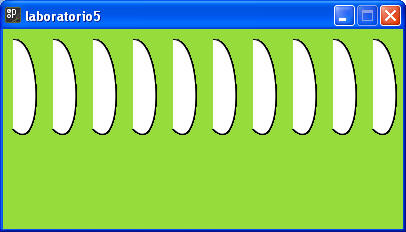
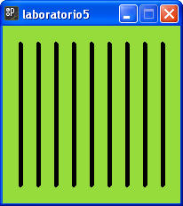
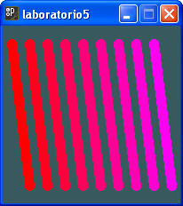
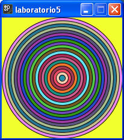
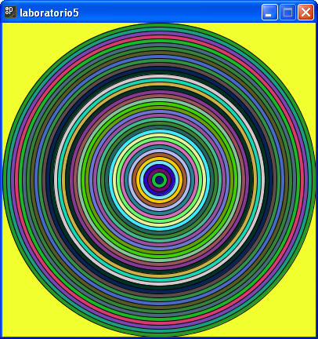
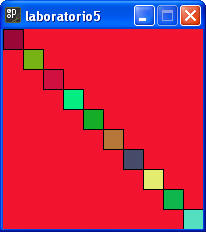
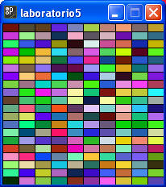

Recuerda que los colores y tamaños deben ser lo mas parecidos a los dibujos solicitados.
1. Crea un programa que realice el siguiente dibujo. Son 10 curvas de bezier, para poder dibujarlas es necesario que revises el autoestudio #2 para recordar los parámetros de esta figura. La ventana es de 400 X 200 pixeles.

2. Crea un programa que realice el siguiente dibujo. La ventana es de 200 X 200 pixeles, el grueso de línea es de 5 pixeles.

3. Crea un programa que realice el siguiente dibujo. En este caso el grueso de la línea es de 10 pixeles.

4. Crea un dibujo que genere círculos concéntricos, en este caso para que el dibujo no se deforme, la ventana debe tener el mismo ancho que alto. Además deben dibujarse tantos círculos como quepan en la ventana, y tener un color aleatorio. La distancia entre cada circulo es de 10 pixeles.
Ejemplo con una ventana de 200 X 200

Ejemplo con una ventana de 400 X 400

Nota:
La función random() es usada para generar valores aleatorios, los cuales son restringidos por sus parámetros de entrada. Existen 2 formas de utilizar la función:
random(limite)
random(limInferior, limSuperior)
Ejemplos:
random(5); // genera un real entre 0 y 5 sin incluirlos, es decir 0.00001 a 4.99999
random(12,45); // genera un número real entre 12 y 45 sin incluirlos
Sección de ejercicios opcionales
5. Crea un dibujo que genere una escalera 10 cuadrados con colores aleatorios, el dibujo se debe ajustar si cambiamos el tamaño de la ventana (nuevamente para que se vea como la imagen, es necesario que el alto y el ancho sea el mismo).

6. Crea un dibujo que rellena la pantalla de rectángulos con colores aleatorios, debe mostrar 10 rectángulos a lo largo(ancho) y el doble a lo alto.
